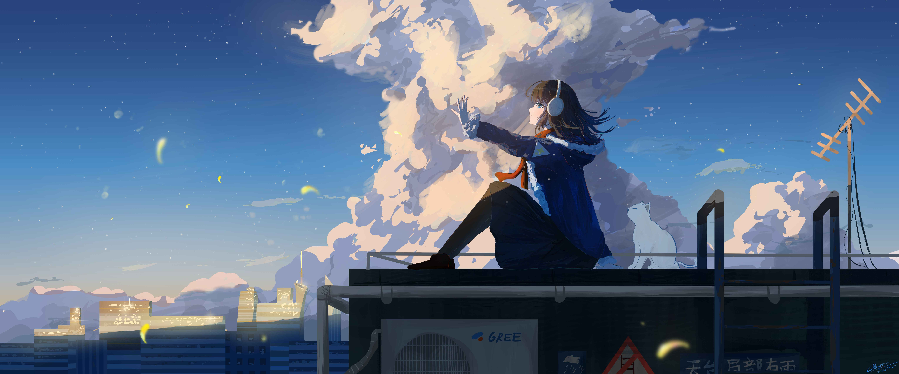

Esta playlist contiene algunas de mis canciones favoritas de EDM, House, Dubstep, Drum & Bass y Trance.
Artistas destacados: Skrillex, Porter Robinson, Fred again.., Camellia, Four Tet y muchos más.
Géneros: Future Bass, Tech House, Progressive House, UK Garage, Hard Dance y Electronic.
en Alpha se muestran todas las canciones que aun no han sido lanzadas o son difíciles de encontrar